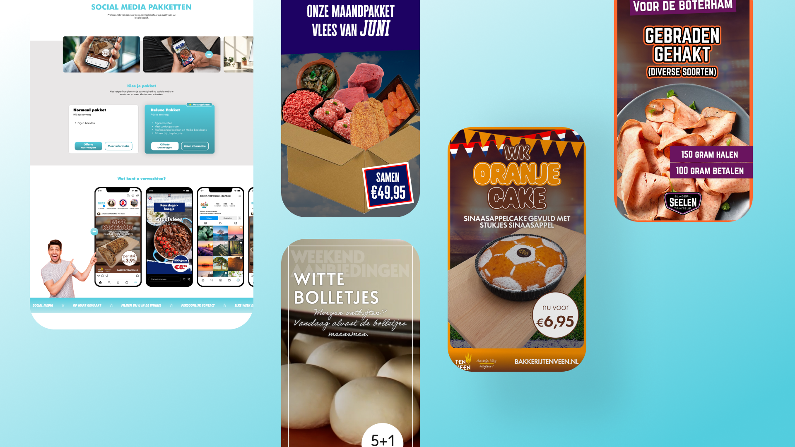
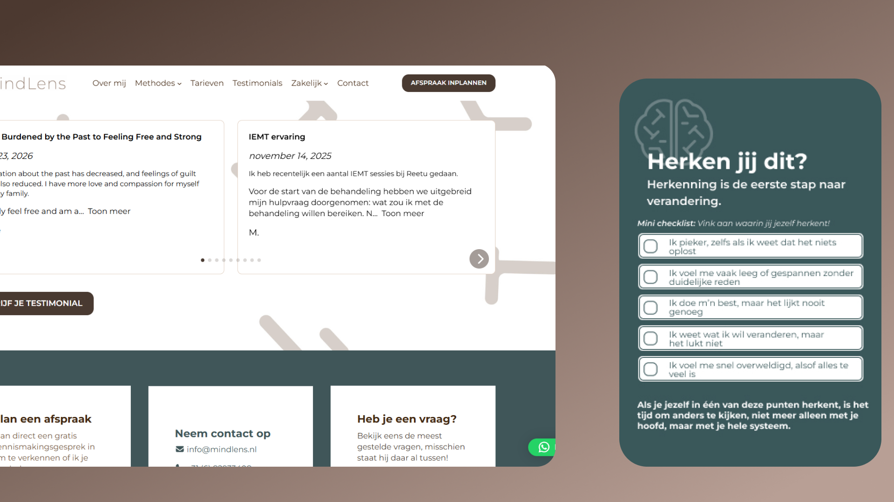
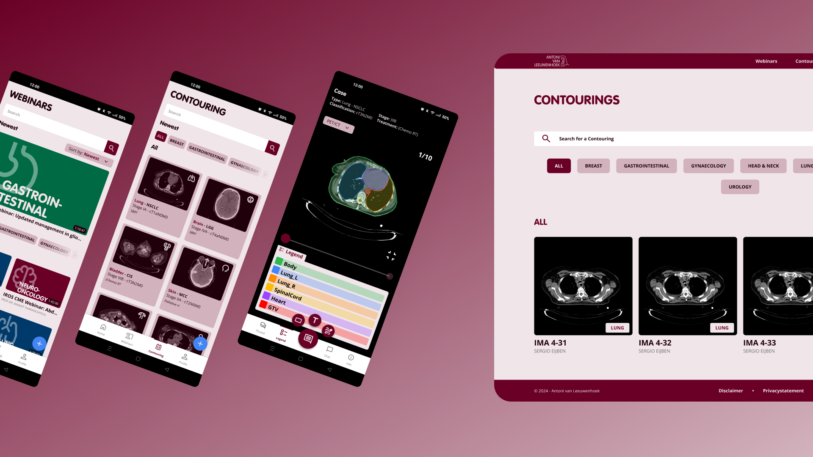
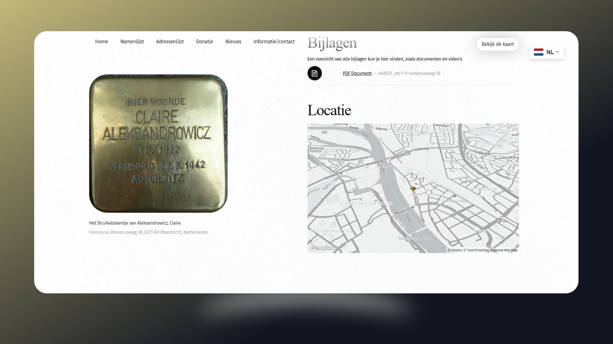
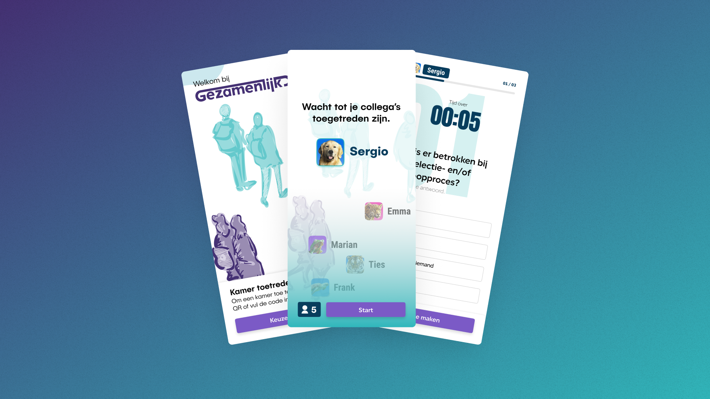

Welkom!
Ik ben een Digital Designer met een passie voor het creëren van gebruiksvriendelijke en visueel aantrekkelijke digitale ervaringen. Ik ben gespecialiseerd in het overbruggen van design en ontwikkeling om impactvolle oplossingen te realiseren. Verken deze website om meer over mij, mijn vaardigheden en mijn projecten te ontdekken.
heiba_service.prproj.
Bij Heiba Service ben ik Digital Designer. Ik verzorg hier digital signage-video's voor klanten die voornamelijk werkzaam zijn in de foodsector. Op de digitale schermen communiceren we bij Heiba Service wekelijks de klant zijn ambacht, passie en producten waar hij trots op is. Ook doorplaatsing op de social media-kanalen nemen wij hierbij voor onze rekening. Hierbij heb ik ruime ervaring opgedaan met Adobe Creative Suite, waarbij het zwaartepunt ligt op Photoshop en Premiere Pro.

mindlens.wordpress.
MindLens is een project/opdracht die ik heb uitgevoerd voor een therapeut bij wie ik zelf onder behandeling ben geweest. Zij wilde graag haar eigen bedrijf opstarten en vroeg mij om een website voor haar op te zetten. Hierbij heb ik gebruik gemaakt van WordPress en een bestaand thema. Ik had het design graag volledig zelf ontworpen, maar dit paste niet binnen het beschikbare budget en de planning. Ook heb ik een brochure gemaakt. Deze brochure is uiteindelijk uitgeprint en uitgedeeld aan mensen.

avl_afst.figma.
Tijdens mijn afstuderen van de HvA heb ik al mijn skills moeten laten zien in het maken van een project. Ik heb ervoor gekozen om te helpen bij een project dat maatschappelijke impact zou maken. Ik kwam terecht bij het Antonie van Leeuwenhoek Ziekenhuis, waar ik oncologen hielp met een nieuw platform. De Design Challenge was: “Hoe kunnen Nederlandse en Indonesische oncologen, met behulp van een online interactieve oplossing, samenwerken en hun kennis delen, opslaan en terugvinden“.

mheid_struikelst.html.
Tijdens mijn stage bij Merkelijkheid heb ik geholpen met het opzetten van een nieuwe website. Deze website gaat over Struikelsteentjes in Maastricht. Struikelstenen zijn stenen om Joodse slachtoffers van de Tweede Wereldoorlog te herdenken. Op deze website kan je de Struikelsteentjes vinden en informatie over de persoon aan wie de steen is opgedragen. Op basis van een bestaand ontwerp heb ik een groot deel van de pagina's gebouwd met behulp van WordPress, PHP, HTML, CSS en JavaScript.

merkelijkheid_afstudeer.project.
Mijn eerste afstudeerproject deed ik bij mijn toenmalige stage, Merkelijkheid. Het project is nooit gerealiseerd maar ik was erg trots op het design. Met behulp van onderzoeksmethodes en Figma heb ik een goed ontwerp kunnen maken.

Over mij.
Mijn naam is Sergio Eijben. Ik woon in Krommenie en ben 27 jaar.
Voordat ik op de HvA kwam, heb ik MBO niveau 4 Applicatieontwikkelaar gedaan. Hier heb ik dingen zoals Back-End en Front-End geleerd. De Front-End kant van deze techniek beviel mij heel erg, en daarom ben ik CMD gaan doen op de HvA. In de 3 leerjaren die ik op het HBO gehad heb, heb ik voornamelijk voor veel Front-End delen gekozen. Zoals Block: Tech in leerjaar 2, de technische kant van het Project Information Design, en de minor Web Design & Development in leerjaar 3.
Tijdens het afstuderen ben ik erachter gekomen dat ik UI/ UX Design, of ook wel Digital Design, erg leuk vind. Ik haal mijn plezier dan ook het meest uit het maken van mooie designs.
Vaardigheden.
Contact.
Heb je interesse om met mij samen te werken? Neem contact met mij op via: